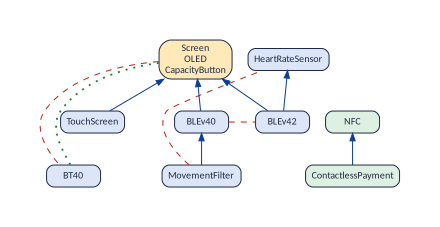
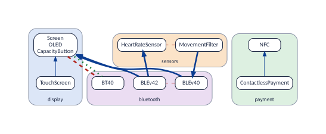

Splitting the configuration among teams
A large product is rarely configured by one person. The display engineers decide the display features, the radio engineers the Bluetooth ones, the people who know payment decide payment: each group of people, a team, decides the features it knows. The split works well when the teams do not interfere, that is, when no decision of one team forces, forbids or needs a decision of another. This section gathers the operations that help to split the configuration in that way: to find parts that need no coordination at all, to measure how much a proposed split interferes and where, to improve it, to order the teams, and to find the few decisions worth taking together before the teams start.
When do two teams interfere? When a feature of one and a feature of the other are joined by a link of the graphs. Each kind of link interferes in its own way:
f requires g (arrow): if the team of selects it, the team of must select ; if the team of leaves it out, the team of must leave out.
f excludes g (red line): whoever selects first forbids the other feature to the other team.
f or g (at-least-one line): if one team leaves its feature out, the other team must select its own.
A split is a tibble with one row per feature and its team. The examples use the teams that a person who knows the Mi Band would form, the same grouping as in Communities:
teams <- tibble(
feature = c(
"Screen",
"TouchScreen",
"OLED",
"CapacityButton",
"ContactlessPayment",
"NFC",
"MovementFilter",
"HeartRateSensor",
"BLEv40",
"BLEv42",
"BT40"
),
team = c(
"display",
"display",
"display",
"display",
"payment",
"payment",
"sensors",
"sensors",
"bluetooth",
"bluetooth",
"bluetooth"
)
)
teams |> count(team)
#> # A tibble: 4 x 2
#> team n
#> <chr> <int>
#> 1 bluetooth 3
#> 2 display 4
#> 3 payment 2
#> 4 sensors 2Core and dead features need no team, since they are already decided.
A variable feature that no team owns goes to a team called
(unassigned), with a warning.
The operations of this section, at a glance:
| Question | Function | Section |
|---|---|---|
| Which teams never need to talk? | vp_independent_parts |
Teams that never need to talk: independent parts |
| Which single features tie a part together? | vp_cut_features |
Cut features |
| Where do two teams interfere? | vp_team_links |
Where two teams interfere |
| How independent is each team? | vp_teams |
How independent each team is |
| Which features sit better in another team? | vp_team_moves |
Features that sit better in another team |
| What split do the links suggest? | vp_communities |
A split proposed by the links |
| In which order should the teams decide? | vp_team_order |
In which order the teams decide |
| Which decisions, taken first, cut the model apart? |
vp_split_after,
vp_splitting_decisions
|
Decisions that cut the model apart |
Teams that never need to talk: independent parts
Function: vp_independent_parts()
The question. Does the model fall into parts that can be configured, tested, and handed to teams, each on its own?
Take the three graphs together and look for groups of features that no link joins to the rest (the connected components): the independent parts. A choice in one part never forces or forbids anything in another, so a team that owns a whole part never interferes with anyone, and the part can be configured, tested and studied apart. The band has two parts (the figure): payment (NFC and contactless payment) and everything else.
vp_independent_parts(band) |>
group_by(part) |>
summarise(features = paste(feature, collapse = ", "))
#> # A tibble: 2 x 2
#> part features
#> <int> <chr>
#> 1 1 Screen, TouchScreen, OLED, CapacityButton, MovementFilter, HeartRateSensor, BLEv40, BLEv42,~
#> 2 2 ContactlessPayment, NFC
vp_independent_parts(bb) |> distinct(part, size) |> head(4)
#> # A tibble: 4 x 2
#> part size
#> <int> <int>
#> 1 1 107
#> 2 2 84
#> 3 3 52
#> 4 4 41
vp_independent_parts(bb) |> distinct(part) |> nrow()
#> [1] 121So the payment team is free; the other three teams share one part and will interfere. BusyBox falls into 121 parts; the largest has 107 of its 623 features, and 38 are single features with no strong relationship at all. On large models the parts help little: Linux 3.13 has one part of 7,045 of its 7,100 options. The rest of this section deals with teams that share a part.
Why it matters. A part is the safest unit to hand to a team or to a test campaign: whatever is decided in it, no other part is affected, so the parts can be configured, reviewed and tested separately, and combined freely. A model that falls into many parts is easier to scale than one in which everything is tied to everything.
Limits: what this cannot tell you
Independent as far as relationships between two features go: a rule over three features (“A needs B or C”, with A in one part and B and C in another) can still tie two parts together. For testing, combine the parts only after checking the model for such rules.
Cut features
Function: vp_cut_features()
The question. Which single features hold two parts of the model together?
A cut feature is one whose removal splits its part into pieces (an articulation point). Cut features are computed on the minimal form, which is close to what was written; on the complete graphs, almost nothing is a cut:
vp_cut_features(band)
#> # A tibble: 1 x 3
#> feature pieces largest_piece
#> <chr> <int> <int>
#> 1 Screen 3 4
vp_cut_features(bb) |> head(4)
#> # A tibble: 4 x 3
#> feature pieces largest_piece
#> <chr> <int> <int>
#> 1 CONFIG_LONG_OPTS 21 47
#> 2 CONFIG_FIND 21 84
#> 3 CONFIG_VOLUMEID 20 62
#> 4 CONFIG_ASH 15 18Without the screen, the main part of the band falls into three pieces
(the figure): TouchScreen alone, BT40 alone, and the
rest. In BusyBox, CONFIG_LONG_OPTS and
CONFIG_FIND hold more than twenty pieces each together: a
change to them reaches places that have nothing else in common.

Why it matters. A cut feature is a single point of coupling between subsystems: everything on one side reaches the other only through it. It is where a modularisation would cut, where a change crosses subsystem boundaries, and what to review first when a change affects features that seem unrelated.
Limits: what this cannot tell you
Cuts of the graphs: the pieces may still be tied by rules over three features. A feature that is not a cut can still be essential; it only means that some other path of links joins its neighbours.
Where two teams interfere
Function: vp_team_links()
The question. Which links join features of different teams?
vp_team_links() lists every link of the graphs whose two
features belong to different teams, with the team of each end. Counted
by pair of teams, it shows who must talk to whom, and about what:
vp_team_links(band, teams) |> count(from_team, link, to_team)
#> # A tibble: 7 x 4
#> from_team link to_team n
#> <chr> <chr> <chr> <int>
#> 1 bluetooth requires display 6
#> 2 bluetooth requires sensors 1
#> 3 display atleastone bluetooth 3
#> 4 display excludes bluetooth 4
#> 5 sensors excludes bluetooth 2
#> 6 sensors requires bluetooth 1
#> 7 sensors requires display 3
vp_team_links(vp_minimal(band), teams)
#> # A tibble: 6 x 5
#> from from_team link to to_team
#> <chr> <chr> <chr> <chr> <chr>
#> 1 MovementFilter sensors requires BLEv40 bluetooth
#> 2 BLEv40 bluetooth requires Screen display
#> 3 BLEv42 bluetooth requires Screen display
#> 4 BLEv42 bluetooth requires HeartRateSensor sensors
#> 5 Screen display excludes BT40 bluetooth
#> 6 Screen display atleastone BT40 bluetoothOn the complete graphs (the first answer) there are 20 such links: every pair of features of two teams whose decisions constrain each other. The arrows from the Bluetooth team to the display team, for example, say that both versions of BLE need the screen: the Bluetooth team cannot offer BLE if the display team leaves the screen out. On the minimal form (the second answer) there are 6: roughly what was written between the teams, which is what they must discuss (the figure). The complete graphs count more because a link to the screen is also a link to the two members of its atomic set, and because chains of links add the links they imply.

Why it matters. The links between teams are the points where the configuration needs coordination. Listing them turns “the teams must coordinate” into a short agenda: which features, which teams, and whether the issue is a requirement (one team waits for the other), a conflict (only one of them can have its way) or an at-least-one line (one of them must say yes).
Limits: what this cannot tell you
Links between two features only. Through a rule over three features, two teams can interfere with no link between them.
Without the at-least-one graph (
or_graph = TRUE), the interference through leaving features out is missing, and the function warns.A link says that two decisions constrain each other, not that the teams disagree: often one of the decisions is obvious.
How independent each team is
Function: vp_teams()
The question. For each team: how many links stay inside it, how many go to other teams, and how many of its features can it decide alone?
vp_teams(band, teams)
#> # A tibble: 4 x 7
#> team features links_inside links_outside teams_linked free_features free_share
#> <chr> <int> <int> <int> <int> <int> <dbl>
#> 1 bluetooth 3 3 17 2 0 0
#> 2 display 4 9 16 2 0 0
#> 3 payment 2 1 0 0 2 1
#> 4 sensors 2 1 7 2 0 0The columns, for a team :
| Column | Meaning |
|---|---|
features |
, the features the team decides. |
links_inside |
The links with both ends in . |
links_outside |
The links with one end in and the other in another team. |
teams_linked |
How many other teams shares a link with: the teams it must talk to. |
free_features |
The features of with no link to another team: decides them alone. |
free_share |
: 1 for a team that never needs anybody, 0 for one that cannot decide anything alone. |
On the band only the payment team is free: every feature of the other
three teams is tied to another team. On Linux, a split by the first word
of the option names (USB_..., SND_...,
NET_...: the subsystems that maintainers know) into ten
teams, plus one team other for the rest, gives:
big <- c(
"USB",
"SND",
"DVB",
"VIDEO",
"SENSORS",
"NET",
"SCSI",
"FB",
"CRYPTO",
"MTD"
)
linux_teams <- vp_features(linux) |>
filter(status == "variable") |>
select(feature) |>
mutate(
team = sub("_.*", "", feature),
team = ifelse(team %in% big, team, "other")
)
vp_teams(linux, linux_teams) |>
select(
team,
features,
links_outside,
teams_linked,
free_features,
free_share
) |>
arrange(desc(free_share))
#> # A tibble: 11 x 6
#> team features links_outside teams_linked free_features free_share
#> <chr> <int> <int> <int> <int> <dbl>
#> 1 MTD 117 818 3 62 0.530
#> 2 other 5258 40903 10 2444 0.465
#> 3 CRYPTO 118 18266 9 38 0.322
#> 4 FB 122 2302 7 20 0.164
#> 5 DVB 164 1742 5 0 0
#> 6 NET 144 4398 7 0 0
#> 7 SCSI 123 3702 4 0 0
#> 8 SENSORS 151 847 5 0 0
#> 9 SND 355 8370 6 0 0
#> 10 USB 386 3762 8 0 0
#> 11 VIDEO 162 2110 8 0 0Only the memory-device team (MTD) decides more than half
of its options alone. 7 of the ten subsystem teams cannot decide a
single option alone, sound and USB among them: every one of their
options is tied to an option of another team, very often of the team
other, where the buses, the architecture and the core of
the kernel are.
Why it matters. The share of free features says how much a team can work on its own; the number of linked teams, how many meetings it needs. A split in which most teams have a high free share and few linked teams can be run in parallel; one in which they do not is a split on paper only.
Limits: what this cannot tell you
Counts of links between two features: a rule over three features can
tie a “free” feature to another team. On the complete graphs, a team
that owns a hub, or a large atomic set, collects many links; on the
minimal form (vp_teams(vp_minimal(model), teams)) the
counts are closer to what was written. Both are measures of the graphs,
not of how hard the teams will find it to agree.
Features that sit better in another team
Function: vp_team_moves()
The question. Which features have more links to another team than to their own?
Moving such a feature turns its links to the other team into inside
links. vp_team_moves() lists them, the largest gain first.
On the minimal form, which counts what was written:
vp_team_moves(vp_minimal(band), teams)
#> # A tibble: 2 x 5
#> feature team links_own better_team links_better
#> <chr> <chr> <int> <chr> <int>
#> 1 Screen display 1 bluetooth 4
#> 2 BT40 bluetooth 0 display 2
vp_team_moves(vp_minimal(linux), linux_teams) |> head(5)
#> # A tibble: 5 x 5
#> feature team links_own better_team links_better
#> <chr> <chr> <int> <chr> <int>
#> 1 MEDIA_DIGITAL_TV_SUPPORT other 6 DVB 103
#> 2 HWMON other 10 SENSORS 99
#> 3 NET NET 4 other 62
#> 4 ETHERNET other 8 NET 43
#> 5 MEDIA_SUBDRV_AUTOSELECT other 1 VIDEO 31On the band the answer is a warning rather than advice: the screen is
tied more to the Bluetooth team than to its own, because both versions
of BLE need it and classic Bluetooth is its opposite. Nobody would give
the screen to the radio engineers; the answer says that the Bluetooth
team will need the display team, whatever the split. On Linux the advice
is good: the option that turns on digital television
(MEDIA_DIGITAL_TV_SUPPORT) belongs with the DVB team, the
hardware monitoring framework (HWMON) with the sensors
team, and ETHERNET with networking. Moving those three cuts
the written links between teams from 1,949 to 1,728, and gives the
sensors team its first free options. The third line shows the opposite
case: NET itself would go to other, because
every corner of the kernel needs networking; a hub belongs to whoever
knows it, wherever its links go.
Why it matters. Teams are usually formed from an existing organisation (menus, directories, departments). The moves point at the features where that organisation and the dependencies disagree: either the feature is in the wrong team, or two teams will always need each other at that point, and the agenda of their meetings should start there.
Limits: what this cannot tell you
A candidate for a person to judge: who knows the feature matters more than where its links go. A hub is linked to everyone and should rarely move.
Each move is judged alone; moving two features together can gain more, or less, than the two moves apart.
As in the previous operations, rules over three features are not counted.
A split proposed by the links
Function: vp_communities + vp_teams()
The question. If the teams could be formed freely, which split would interfere least?
The communities of Communities are groups of features with many links inside and few between: a split proposed by the links alone. With the three graphs, every feature goes to a community, and the communities can be used as teams. Compared with the teams of the people who know the band, on the minimal form:
proposal <- vp_communities(
band,
graphs = c("requires", "excludes", "atleastone")
)
proposal |>
group_by(community) |>
summarise(features = paste(feature, collapse = ", "))
#> # A tibble: 3 x 2
#> community features
#> <int> <chr>
#> 1 1 Screen, TouchScreen, OLED, CapacityButton, BT40
#> 2 2 ContactlessPayment, NFC
#> 3 3 MovementFilter, HeartRateSensor, BLEv40, BLEv42
between <- function(t) {
vp_teams(vp_minimal(band), t) |>
summarise(
teams = n(),
links_between = sum(links_outside) / 2,
free = sum(free_features)
)
}
bind_rows(known = between(teams), proposed = between(proposal), .id = "split")
#> # A tibble: 2 x 4
#> split teams links_between free
#> <chr> <int> <dbl> <int>
#> 1 known 4 6 3
#> 2 proposed 3 2 6
vp_compare_groupings(proposal, teams)
#> [1] 0.7254The proposal puts the screen and classic Bluetooth in one team, since one of them is in every band, and the sensors with the two versions of BLE. It has three teams instead of four and 2 written links between teams instead of 6. The two splits are fairly alike (the last number, 1 for identical splits, Communities). In practice, start from the teams that the organisation has, and use the proposal to see which features it would place elsewhere.
Why it matters. It shows how far the existing organisation is from one that follows the dependencies. When the two are close, the organisation can stay; when they are far apart, the configuration will need much coordination, and the proposal shows where.
Limits: what this cannot tell you
The proposal knows links, not people: it can ask a team to decide features nobody in it knows.
The number of teams is not chosen; it is what the algorithm finds. A split into many small teams has fewer links inside, so compare splits with similar numbers of teams. The algorithm also depends on a random seed (Communities).
With all three graphs, a conflict counts as a reason to be in the same team, like a requirement: two features that compete are best decided by the same people.
In which order the teams decide
Function: vp_team_order()
The question. Which team should decide first, which ones must decide together, and which must agree?
The safe order of A
safe order for the questions asks about a requirement before the
features that need it. Between teams the rule is the same: a team
waits for another when one of its features requires a
feature of the other. Teams that wait for each other, directly or around
a circle, must decide together. Conflicts and at-least-one lines have no
right order: whoever decides first narrows what the other can choose, so
those teams must agree. vp_team_order()
gives the rounds:
vp_team_order(band, teams)
#> # A tibble: 4 x 5
#> team round waits_for decide_together_with must_agree_with
#> <chr> <int> <chr> <chr> <chr>
#> 1 display 1 "" "" "bluetooth"
#> 2 payment 1 "" "" ""
#> 3 bluetooth 2 "display" "sensors" "display, sensors"
#> 4 sensors 2 "display" "bluetooth" "bluetooth"
vp_team_order(band, proposal)
#> # A tibble: 3 x 5
#> team round waits_for decide_together_with must_agree_with
#> <chr> <int> <chr> <chr> <chr>
#> 1 1 1 "" "" "3"
#> 2 2 1 "" "" ""
#> 3 3 2 "1" "" "1"With the teams of the people who know the band, the display and payment teams go first. The Bluetooth and sensors teams wait for the display team, and they wait for each other (the movement filter needs BLE 4.0; BLE 4.2 needs the heart-rate sensor), so they must decide together; the Bluetooth team must also agree with the display team about classic Bluetooth and the screen. With the proposal, the knot disappears: the team of the screen and classic Bluetooth (community 1) and the payment team go first, and the team of the sensors and BLE follows, agreeing with the first on its conflicts.
On Linux with the eleven teams above, every team waits, through
others, for every other: the team other holds the buses and
the core that everyone needs, and needs options of every subsystem in
turn. Restricted to the options of the ten subsystems (with
vp_subset(), which is exact, Part of a model), an
order appears:
ten <- linux_teams |> filter(team != "other")
vp_team_order(vp_subset(linux, ten$feature), ten) |>
select(team, round, waits_for, decide_together_with)
#> # A tibble: 10 x 4
#> team round waits_for decide_together_with
#> <chr> <int> <chr> <chr>
#> 1 CRYPTO 1 "" "NET, SCSI"
#> 2 MTD 1 "" ""
#> 3 NET 1 "" "CRYPTO, SCSI"
#> 4 SCSI 1 "" "CRYPTO, NET"
#> 5 SENSORS 1 "" ""
#> 6 DVB 2 "CRYPTO, NET" "FB, SND, USB, VIDEO"
#> 7 FB 2 "NET" "DVB, SND, USB, VIDEO"
#> 8 SND 2 "" "DVB, FB, USB, VIDEO"
#> 9 USB 2 "CRYPTO, NET, SCSI" "DVB, FB, SND, VIDEO"
#> 10 VIDEO 2 "NET" "DVB, FB, SND, USB"Cryptography, networking and SCSI go first and decide together; memory devices and sensors also go first, each on its own. Then the five multimedia and device teams decide together, after the first round, since some of them wait for networking, cryptography or SCSI.
Why it matters. It turns the links between teams into a plan of work: who can start at once, who waits for whom, and where a joint session is unavoidable. A configuration done in that order never asks a team to undo a decision because a team it depends on decided later.
Limits: what this cannot tell you
The order respects requirements between two features. It does not settle conflicts, which need agreement whatever the order, nor rules over three features, through which a later decision can still make an earlier one impossible: check the final configuration with a solver.
One link is enough to make a team wait; the order says nothing about how much there is to wait for (
vp_team_links()does).
Decisions that cut the model apart
Function: vp_split_after()
The question. Which few decisions, taken first and together, leave a model that falls into independent parts?
Once a feature is decided, everything it forces is decided too, and
the links through those features no longer tie anything: what is left
may fall into parts. vp_split_after() takes some decisions
and returns the independent parts of the features still undecided (its
attribute decided lists those that the decisions settle).
vp_splitting_decisions() tries every single decision,
selecting and leaving out each feature, and sorts them by the largest
part they leave:
vp_split_after(band, deselected = "Screen") |>
group_by(part) |>
summarise(features = paste(feature, collapse = ", "))
#> # A tibble: 2 x 2
#> part features
#> <int> <chr>
#> 1 1 ContactlessPayment, NFC
#> 2 2 HeartRateSensor
vp_splitting_decisions(band) |> head(4)
#> # A tibble: 4 x 5
#> feature decision decided parts largest_part
#> <chr> <chr> <int> <int> <int>
#> 1 BLEv40 selected 6 3 2
#> 2 BLEv42 selected 8 2 2
#> 3 BT40 selected 8 2 2
#> 4 CapacityButton left out 8 2 2Leaving out the screen decides eight features (the screen, its atomic set and everything that needs it are left out, and classic Bluetooth is forced in) and leaves two parts, which two teams can decide apart. The best single decisions leave no part of more than two features: a short first meeting about the screen or the version of Bluetooth turns the band into pieces.
On Linux, the function tries the 50 options with the most links:
cuts <- vp_splitting_decisions(linux)
attr(cuts, "largest_before")
#> [1] 7045
head(cuts, 4)
#> # A tibble: 4 x 5
#> feature decision decided parts largest_part
#> <chr> <chr> <int> <int> <int>
#> 1 NLATTR left out 1768 33 5269
#> 2 GENERIC_NET_UTILS left out 1767 33 5270
#> 3 NET left out 1765 33 5272
#> 4 NET_RX_BUSY_POLL left out 1765 33 5272With no decision, the largest part has 7,045 options. The best single
decision, leaving out NLATTR (the netlink attributes, which
networking needs), settles 1,768 options and leaves 33 parts, but the
largest still has 5,269 options. Linux does not fall apart with one
decision. Several, taken together with vp_split_after(), go
further: a kernel for a small device without netlink attributes, PCI and
I2C buses,
three <- vp_split_after(linux, deselected = c("NLATTR", "PCI", "I2C"))
c(
decided = length(attr(three, "decided")),
parts = n_distinct(three$part),
largest = max(three$size)
)
#> decided parts largest
#> 3735 40 3292settles 3,735 options and leaves a largest part of 3,292.
Why it matters. It identifies the decisions for a kick-off meeting: a handful of choices, taken together by representatives of all the teams, after which the teams can work in parallel without interfering. In practice these are often the choices that define the kind of product (the platform, the presence of a whole subsystem).
Limits: what this cannot tell you
Parts of the graphs: a rule over three features can still tie two parts. And what a set of decisions forces is what each forces alone (What some decisions force): two decisions together may force more, which can only cut the model further.
vp_splitting_decisions()tries one decision at a time, on at most 50 candidate features for a large model (give others withcandidates). The best combination of several decisions is not searched: try it withvp_split_after().Decisions that leave features out need the at-least-one graph: without it, what they force is incomplete.
Testing
A product line cannot test every product, so it tests a sample. A -wise sample covers every valid combination of values of features at least once: for , every feature selected and left out; for , for every pair of features, every valid combination of the four (both, only one, only the other, neither). The graphs answer three questions about samples without a solver.
A sample is a table with one row per configuration and one column per
feature, holding 0 and 1. The file data/sample.csv has five
bands:
sample <- read.csv("data/sample.csv")
sample
#> product Screen TouchScreen OLED CapacityButton ContactlessPayment MovementFilter HeartRateSensor
#> 1 1 1 1 1 1 1 1 0
#> 2 6 1 1 1 1 0 0 1
#> 3 12 1 0 1 1 1 0 1
#> 4 18 1 0 1 1 0 0 1
#> 5 24 0 0 0 0 0 0 0
#> BLEv40 BLEv42 BT40 NFC
#> 1 1 0 0 1
#> 2 1 0 0 1
#> 3 0 1 0 1
#> 4 0 1 0 0
#> 5 0 0 1 0How many combinations to cover
Function: vp_combinations_to_cover()
The question. How many combinations must a -wise sample cover?
For one feature (). Each variable feature can be selected and can be left out, in some product: that is what “variable” means. So there are two things to cover per feature, in all; core and dead features are fixed and add nothing. The band has 11 variable features, so 22.
For two features (). Each pair of features has four combinations: both, only the first, only the second, neither. With features there are pairs, so at most combinations; for the band, . But some combinations occur in no product, and a sample cannot (and need not) cover them. Look at three pairs of the band:
vp_pair(band, "NFC", "HeartRateSensor") |>
select(combination, possible, ruled_out_by)
#> # A tibble: 4 x 3
#> combination possible ruled_out_by
#> <chr> <lgl> <chr>
#> 1 both TRUE ""
#> 2 only NFC TRUE ""
#> 3 only HeartRateSensor TRUE ""
#> 4 neither TRUE ""
vp_pair(band, "TouchScreen", "Screen") |>
select(combination, possible, ruled_out_by)
#> # A tibble: 4 x 3
#> combination possible ruled_out_by
#> <chr> <lgl> <chr>
#> 1 both TRUE ""
#> 2 only TouchScreen FALSE "TouchScreen requires Screen"
#> 3 only Screen TRUE ""
#> 4 neither TRUE ""
vp_pair(band, "Screen", "BT40") |> select(combination, possible, ruled_out_by)
#> # A tibble: 4 x 3
#> combination possible ruled_out_by
#> <chr> <lgl> <chr>
#> 1 both FALSE "Screen excludes BT40"
#> 2 only Screen TRUE ""
#> 3 only BT40 TRUE ""
#> 4 neither FALSE "every product has Screen or BT40"NFC and the heart-rate sensor are not linked: the four combinations occur, and a 2-wise sample must show all four.
The touch screen requires the screen: “a touch screen without a screen” occurs in no band. Three combinations to cover.
The screen and classic Bluetooth exclude each other, and every band has one of them: “both” and “neither” are impossible. Two combinations to cover.
Each link of the graphs rules out exactly one combination of its pair, and two links never rule out the same one:
| Link | Rules out | Example |
|---|---|---|
| requires (an arrow) | selected, left out | a touch screen without a screen |
| excludes (a red line) | both selected | a screen with classic Bluetooth |
| or (an at-least-one line) | both left out | neither a screen nor classic Bluetooth |
(Two features that require each other, as in an atomic set, have two arrows, which rule out the two “only one” combinations.) So the count is a subtraction, with , and the numbers of arrows, conflicts and at-least-one lines of the complete graphs:
vp_combinations_to_cover(band, t = 1)
#> # A tibble: 1 x 3
#> t combinations exact
#> <int> <dbl> <lgl>
#> 1 1 22 TRUE
vp_combinations_to_cover(band, t = 2)
#> # A tibble: 1 x 3
#> t combinations exact
#> <int> <dbl> <lgl>
#> 1 2 186 TRUE
c(
pairs = choose(11, 2),
at_most = 4 * choose(11, 2),
requires = nrow(band$requires),
excludes = nrow(band$excludes),
atleastone = nrow(band$atleastone)
)
#> pairs at_most requires excludes atleastone
#> 55 220 21 10 3For the band: . Every one of these 186 combinations occurs in some product (for two features the graphs are exact, Everything about two features), so a 2-wise sample must show each of them at least once. Sampling tools usually find this number with one solver call per pair Johansen et al. (2012); the graphs give it with a subtraction.
Why it matters. It is the size of the job a -wise test campaign must do: the number of feature interactions that exist in some product and therefore need to be tested. Without the graphs, finding it takes one solver call per combination.
Limits: what this cannot tell you
For two features the count is exact with the three graphs. Without
the at-least-one graph, exact is FALSE: the
“neither” combinations of the missing lines are counted, so the number
is an upper limit.
How much a sample covers, and what it misses
Function: vp_coverage()
The question. How much of that does a given sample cover, and what does it miss?
How vp_coverage() counts. It reads the
sample as a table of 0 and 1, one row per configuration and one column
per variable feature (other columns, such as product, are
ignored). Then:
For , a value of a feature (“Screen selected”, “Screen left out”) is covered if at least one row has it.
For , a combination of a pair (“Screen left out and ContactlessPayment selected”) is covered if at least one row has both values. Only the combinations that some product can have are counted: one that the graphs rule out would be a broken rule, which
vp_sample_violations()reports, not coverage.The coverage is the share: , with “to cover” the count of the previous operation.
Take the pair of the screen and contactless payment in the five bands of the sample:
sample |> count(Screen, ContactlessPayment)
#> Screen ContactlessPayment n
#> 1 0 0 1
#> 2 1 0 2
#> 3 1 1 2Three of the four combinations are there. The fourth, “no screen, but
contactless payment”, is missing, and it is possible (the graphs do not
rule it out, and for pairs they are exact): it is one of the
combinations the sample does not cover. vp_coverage() does
this for every pair and every value at once:
vp_coverage(band, sample)
#> # A tibble: 2 x 4
#> t covered to_cover coverage
#> <int> <int> <dbl> <dbl>
#> 1 1 22 22 1
#> 2 2 166 186 0.892
vp_sample_violations(band, sample)
#> # A tibble: 0 x 3
#> # i 3 variables: configuration <int>, rule <chr>, features <chr>The five bands cover every single value (22 of 22), and 166 of the 186 combinations of two features, 89 %. No band breaks a link of the graphs, as it should be for valid bands.
How vp_uncovered() lists what is
missing. For each pair of features and each of its four
combinations, it keeps the combination when the graphs allow it and no
row of the sample has it. Each row of the answer is one such
combination: feature_1 with value_1 and
feature_2 with value_2 (TRUE for
selected):
missing <- vp_uncovered(band, sample)
nrow(missing)
#> [1] 20
head(missing, 6)
#> # A tibble: 6 x 4
#> feature_1 value_1 feature_2 value_2
#> <chr> <lgl> <chr> <lgl>
#> 1 Screen FALSE ContactlessPayment TRUE
#> 2 Screen FALSE HeartRateSensor TRUE
#> 3 Screen FALSE NFC TRUE
#> 4 TouchScreen FALSE MovementFilter TRUE
#> 5 TouchScreen TRUE BLEv40 FALSE
#> 6 TouchScreen FALSE BLEv40 TRUE
# which features take part in the most missing combinations?
tibble(
feature = c(missing$feature_1, missing$feature_2),
value = c(missing$value_1, missing$value_2)
) |>
count(feature, value, sort = TRUE) |>
head(4)
#> # A tibble: 4 x 3
#> feature value n
#> <chr> <lgl> <int>
#> 1 ContactlessPayment TRUE 4
#> 2 HeartRateSensor TRUE 4
#> 3 NFC TRUE 4
#> 4 BT40 TRUE 3The 20 missing combinations cluster: the sample has a single band without a screen (product 24, which has almost nothing), so “no screen” (and, with it, no OLED and no capacity button) has never been seen with payment, with the heart-rate sensor or with NFC. The count says what the next product should have. The file of all the valid bands has one without a screen but with classic Bluetooth, NFC, contactless payment and the heart-rate sensor; adding it:
products <- read.csv("data/miband3_products.csv")
better <- bind_rows(sample, products |> filter(product == 19))
vp_coverage(band, better)
#> # A tibble: 2 x 4
#> t covered to_cover coverage
#> <int> <int> <dbl> <dbl>
#> 1 1 22 22 1
#> 2 2 178 186 0.957
nrow(vp_uncovered(band, better))
#> [1] 8One more band covers 12 of the 20 missing combinations: the coverage
of pairs rises from 89 % to 96 %. Repeating the step (find what is
missing, pick a valid product that has much of it) is how
vp_pick_sample() builds a sample, below.
Why it matters. It tells a test team how much of the interaction space its products exercise, and exactly which interactions remain untested, so that the next products can be chosen to cover them.
Limits: what this cannot tell you
For combinations of one or two features, the coverage and the list of missing combinations are exact with the three graphs: every combination listed occurs in some product. Without the at-least-one graph, some “neither” combinations may be listed that no product has.
A configuration that breaks no link can still be invalid, because of a rule over three features:
vp_sample_violations()finds invalid configurations, but not all of them; add only products known to be valid (built by a solver or a sampling tool).
How small a sample can be
Function: vp_min_sample_size()
The question. What is the smallest number of configurations that any covering sample must have?
The idea: things that cannot share a configuration. Call item each thing a sample must cover: for , a decision such as “BLEv42 selected” or “CapacityButton left out”; for , a combination of two decisions. Two items are incompatible when no configuration can have both, such as “MovementFilter selected” and “Screen left out”. Now suppose there are items that are incompatible two by two. A configuration contains at most one of them, so covering all needs at least configurations, one per item. No sampling tool can do better, however clever.
When are two decisions incompatible? The graphs say it exactly, for every pair of decisions:
| Two decisions | Incompatible when | Example on the band |
|---|---|---|
| selected, selected | excludes | MovementFilter and BLEv42 |
| selected, left out | requires | BLEv42 and not CapacityButton |
| left out, left out | or (at-least-one line) | not Screen and not BT40 |
| selected, left out | always | NFC and not NFC |
vp_min_sample_size() builds the incompatibility
graph: one node per item, and a line between two items that are
incompatible. A set of items incompatible two by two is a set of nodes
all joined to one another, a clique. The function looks
for the largest clique, and its size is the bound. It returns the clique
itself, one item per row, as the proof:
vp_min_sample_size(band, t = 1)
#> # A tibble: 3 x 3
#> t bound item
#> <int> <int> <chr>
#> 1 1 3 not CapacityButton
#> 2 1 3 BLEv42
#> 3 1 3 MovementFilter
vp_min_sample_size(band, t = 2)
#> # A tibble: 7 x 3
#> t bound item
#> <int> <int> <chr>
#> 1 2 7 NFC and not ContactlessPayment
#> 2 2 7 ContactlessPayment and BLEv40
#> 3 2 7 ContactlessPayment and BLEv42
#> 4 2 7 ContactlessPayment and BT40
#> 5 2 7 BT40 and not NFC
#> 6 2 7 BLEv42 and not NFC
#> 7 2 7 MovementFilter and not NFCFor . The items are the decisions, 22 on the band, and the largest clique has 3 of them (the figure): BLEv42 and the movement filter exclude each other, and both need the capacity button (which is in the atomic set of the screen), so neither can be in a band without it. No band has two of the three, so a sample that selects BLEv42, selects the movement filter and leaves out the capacity button needs three bands at least.
For . The items are the 186 combinations of two features that some band has (Testing, “How many combinations to cover”). Two combinations are incompatible when any decision of one is incompatible with any decision of the other. In the clique of 7 above, for example:
“NFC and not ContactlessPayment” and “ContactlessPayment and BLEv40”: contactless payment would be both left out and selected.
“ContactlessPayment and BLEv40” and “ContactlessPayment and BLEv42”: the two versions of BLE exclude each other.
“BT40 and not NFC” and “ContactlessPayment and BT40”: contactless payment requires NFC.
“MovementFilter and not NFC” and “BLEv42 and not NFC”: the movement filter excludes BLE 4.2.
The other pairs of the seven are incompatible in the same ways, so a 2-wise sample needs at least 7 bands.
Exact or quick. Finding the largest clique is hard
in general. For
the graph has
nodes and is sparse, and the exact search is fast, also for Linux. For
the graph has about
nodes, so the function needs a small model (max_features,
40 by default) and searches exactly only up to 250 nodes (about 11
features); above, it uses a quick greedy search: it starts from the
items with the most incompatibilities and keeps adding an item
incompatible with all those chosen. The clique it finds is still a valid
proof, so the bound is still right, but a larger clique may exist
(exact = TRUE forces the exact search, which can take
hours).
Is the bound reached? vp_pick_sample()
picks a small covering sample from configurations you already have, here
all the valid bands:
products <- read.csv("data/miband3_products.csv")
nrow(vp_pick_sample(band, products, t = 1))
#> [1] 3
nrow(vp_pick_sample(band, products, t = 2))
#> [1] 73 and 7 configurations: the bounds are reached. So, for this model, the smallest -wise sample has exactly 3 configurations and the smallest -wise sample exactly 7, and the graphs alone prove it. A sampling tool that returns a -wise sample of 7 configurations has found the best one possible; one that returns 12 uses 5 more than needed. On Linux 3.13, any sample that selects and leaves out every option at least once needs at least 26 configurations (Krupke et al. use the same idea Krupke et al. (2025)).
Why it matters. It tells whether a sample is good enough: if a tool returns as many products as the bound, no smaller sample exists and the search can stop. It also tells, before building anything, the minimum cost of a test campaign.
Limits: what this cannot tell you
The bound is a floor, not always the true minimum: it uses only incompatibilities between two decisions, and a rule over three features can force more configurations.
For the bound comes from a quick search above 250 nodes (“Exact or quick”, above): still valid, but possibly lower than the best one; models with more than 40 features are refused. For large models use , which is always exact and fast.
The graphs cannot build a sample: a configuration must satisfy every rule of the model.
vp_pick_sample()only chooses among configurations that a solver or a sampling tool produced.
References
M. F. Johansen, Ø. Haugen, F. Fleurey. An algorithm for generating -wise covering arrays from large feature models. In SPLC, 2012.
D. Krupke, A. Moradi, M. Perk, P. Keldenich, G. Gehrke, S. Krieter, T. Thüm, S. P. Fekete. How low can we go? Minimizing interaction samples for configurable systems. arXiv:2501.06788, 2025.